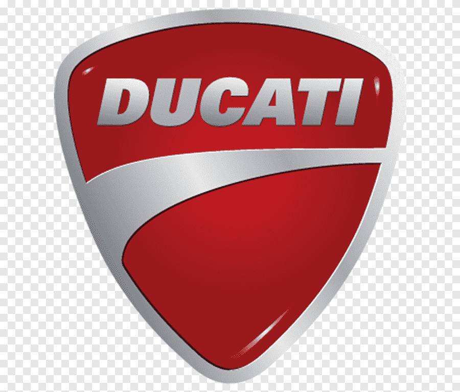

A Panigale V4 S é a primeira motocicleta produzida em série da Ducati a ser equipada com um motor de 4 cilindros, derivado da Desmosedici, da MotoGP. O novo modelo é um concentrado da tecnologia, estilo e performance da Ducati. Uma motocicleta com 1.103 cm3, 217 cv e uma relação potência/peso de 1,1 cv /kg.
🏗 desenvolvido por iceguy ©